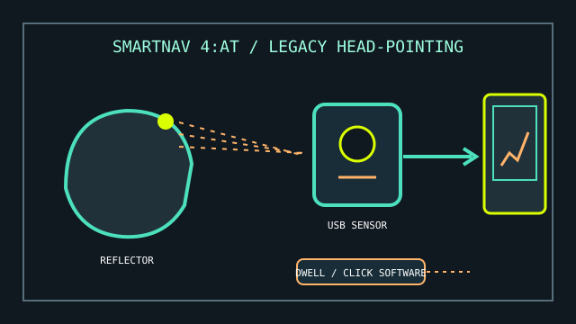

[ ACCESSIBILITY POINTING // NATURALPOINT SMARTNAV ]
NaturalPoint SmartNav 4:AT
A legacy USB head-pointing mouse that uses a reflective marker to move the computer cursor without hand movement.

MODEL IDENTIFICATION: NaturalPoint SmartNav 4:AT (accessibility configuration). Treat as a legacy product: document the exact sensor, cable, marker, driver/software installer, and OS in the stored equipment record.
Model specifications
| Catalog leaf | Adaptive and switch-access controls |
|---|---|
| Exact model / identifier | NaturalPoint SmartNav 4:AT head-pointing mouse; distinguish AT package/software from other SmartNav versions. |
| Mechanism and primary specifications | USB optical tracking of a reflective marker worn on the user’s head; translates movement to mouse-pointer movement. AT package descriptions include dwell-click and on-screen access software. |
| Host interface and compatibility | USB host connection; requires a compatible SmartNav driver/software version. Product support is legacy, so do not assume current operating-system support or availability of the original utility installer. |
| Revision identification | Record device label, included software version, installer source, supported OS actually tested, USB cable, marker, and any switch/click accessory. |
Compatibility, setup & limitations
- The original software and published OS support are legacy; verify that the exact driver and dwell-click utilities can be acquired and run on the intended machine before relying on the device.
- The reflective marker must remain visible to the optical sensor. Head position, display/sensor placement, ambient reflections, and marker movement can affect tracking.
- Pointer movement and clicking are separate. Confirm the included dwell-click software or a compatible switch input is operational, and provide an alternate method for text entry where needed.
- Do not treat reported use on newer systems as vendor-supported compatibility; preserve the tested OS, installer version, and any working configuration.
Preservation and service
Retain the original installation media and a lawful, documented backup of software where available. Keep the reflective markers and cable with the sensor.
Before changing a working host, record driver provenance, OS build, calibration settings, dwell timings, and the accessibility workflow tested.
Product and manual sources
- ErgoCanada — SmartNav 4 product descriptionProduct-specific configuration, use, and historic feature overview.
- SIVA — NaturalPoint SmartNav user manualHosted manual reference for installation and operation.
This is a historical product record; confirm software availability and host compatibility before acquisition or clinical use.